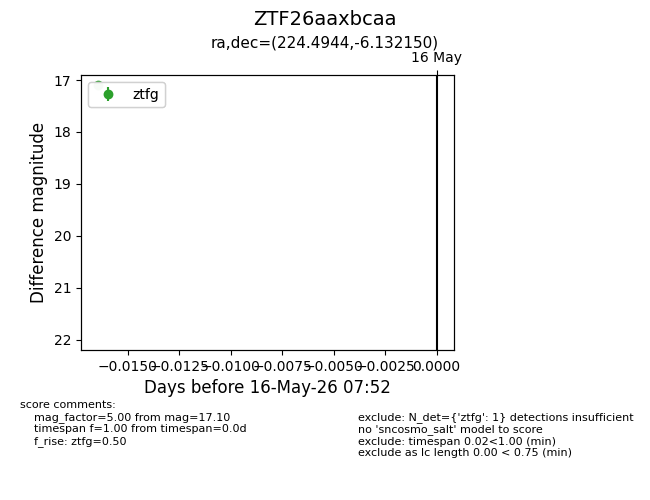
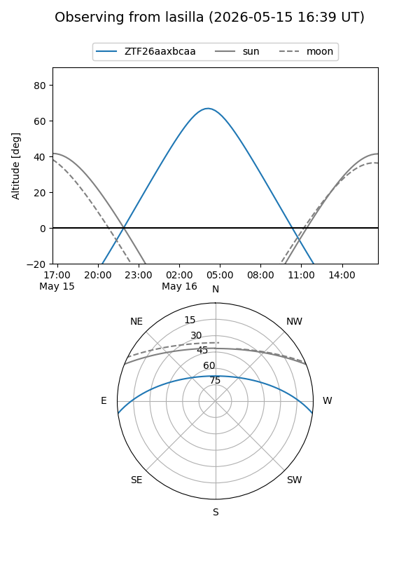
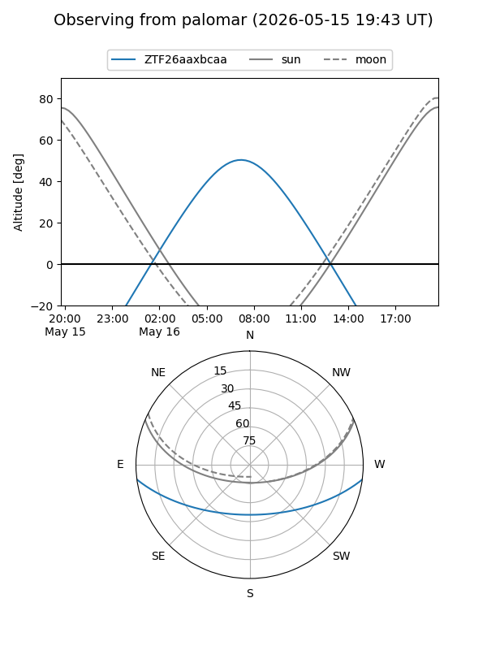

ZTF26aaxbcaa
Target ZTF26aaxbcaa at 2026-05-16 07:54
Aliases and brokers:
FINK: link
Lasair: link
ALeRCE: link
alt names
ZTF26aaxbcaa (ztf,fink_ztf)
Coordinates:
equatorial (ra, dec) = 224.4944,-6.13215
equatorial (HMS+DMS) = 14:57:58.66,-06:07:55.74
galactic (l, b) = (350.2410,+44.80511)
Flags:
Photometry:
last ztfg=17.10
1 ztfg detections
Lightcurve

Visibility


Additional plots